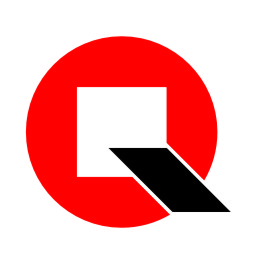

清一罗盘
面向风水爱好者的 HarmonyOS 应用，包含罗盘测向、星盘排盘、知识库管理和 AI 智能问答。
WingsLuo · Personal Website
HarmonyOS developer, RAG builder, and creator of practical tools around Chinese traditional knowledge.
我正在构建「清一罗盘」和相关 AI/RAG 服务，希望把传统堪舆知识、移动端体验和现代检索增强技术结合起来， 做成真正可用、可维护、可持续演进的产品。

我关注个人软件产品、移动应用体验、知识库检索和 AI assistant 的实际落地。 当前主要项目围绕 HarmonyOS App、Python RAG backend、Cloudflare Tunnel/Pages 部署以及个人知识管理展开。
这个网站会逐步沉淀我的项目、文章、实验记录和联系方式。相比社交平台，我希望这里成为一个更稳定的个人入口。
面向风水爱好者的 HarmonyOS 应用，包含罗盘测向、星盘排盘、知识库管理和 AI 智能问答。

为 App 提供文献上传、chunk 切分、向量化检索和流式 RAG 查询能力的 Python 后端服务。

将传统文献内容转化为可检索的语义资料，辅助用户围绕原文进行解释、引用和学习。